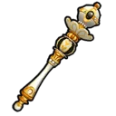

Cajado da Rainha Marfim
Varinha · Tier 12 · Nível 36
O terror dos bispos, torres e cavalos mundo afora.
Atributos
Ataque
880
Defesa
220
Economia
Valor
3.250.000
Tempo de fabricação
1d
XP do comerciante
375.000
Trabalhadores: Erudito 29, Feiticeiro 25, Sacerdotisa 22
Receita


Marcos do projeto
6
Tempo de fabricação -20%
14
-70 Ferro
26
Valor +25%
40
-10 Aço
60
Chance de qualidade +1